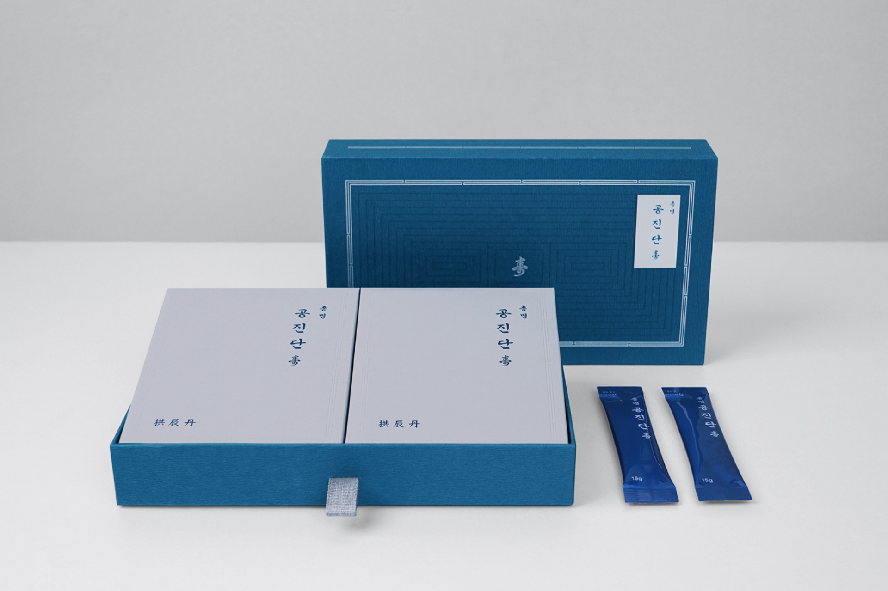
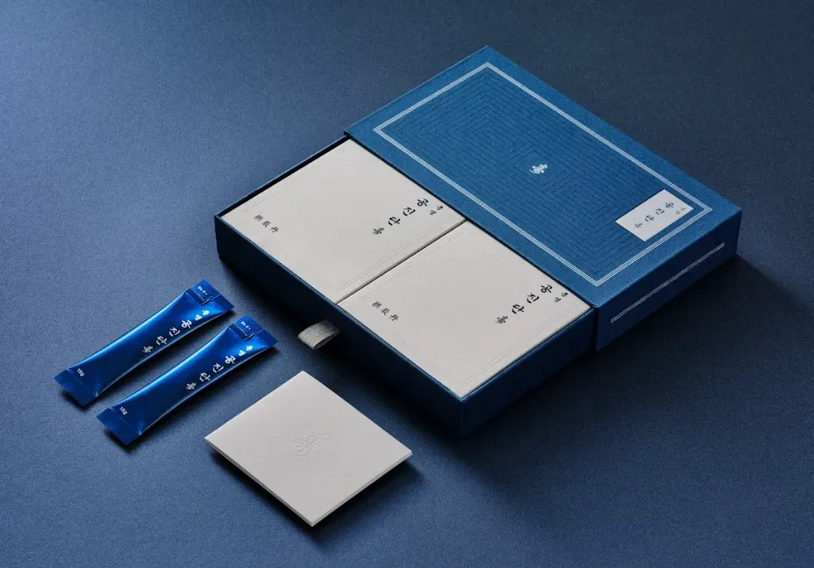
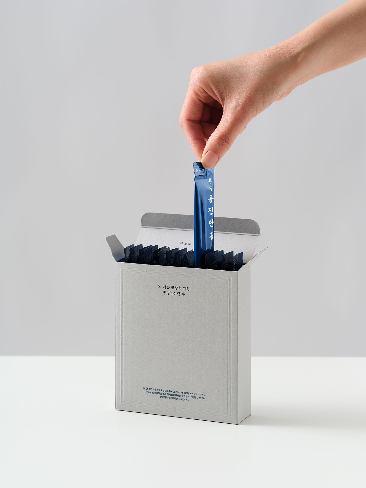

총명공진단
"한 포 복용하고 바로 수면의 질이 좋아졌어요"
"확실히 머리의 명료함이 다릅니다. 안테나가 또렷하게 켜져 있는 느낌이에요"
체력, 기억력, 집중력 3력 처방 총명공진단



총명탕 - [동의보감] 健忘
治多忘,
잘 잊는 증상을 치료하며,
久服能日誦千言,
오래 복용하면 하루에 천 마디의 말을 외울 수 있게 된다.
"한 포 먹고 잤는데, 정말 오랜만에 푹 잤어요. 수면의 질이 달라요."
"머리가 정말 맑아지는 느낌이에요. 안테나가 선명하게 켜진 것 같아요."- 실제 복용자 후기
작업기억
성적에 있어 작업기억 능력이 IQ보다 중요하다.
특히 연산작용(수학), 문해력(국어, 외국어)에 직결.
논문, 연구 많음.
혹시, 당신의 뇌가 지쳤다는 신호일까요?
"분명 방금 들었는데...", "아 그 단어가 뭐였지?"
깜빡하는 순간이 잦아지고, 머릿속에 안개가 낀 것처럼 답답하신가요?
이는 단순히 피곤해서가 아닐 수 있습니다. 체력, 집중력, 기억력이 동시에 떨어지는 것은 당신의 뇌가 지쳐있다는 강력한 신호입니다.
중앙대학교 소아 정신과 논문
천마 단삼 맥문동 용안육
천단맥용의 ADHD 개선
총명탕의 기억력 향상
먹기 편하다
콜라 당도가 11brix.
총명공진단 38brix.
효능
녹용공진단 + 총명탕 + 천단맥용
녹용공진단의 피로 회복
총명탕의 집중력 향상
천단맥용의 작업 기억 개선
체력, 집중력, 기억력의 3력 처방
처방 가이드라인
누구에게 처방하나요?
- 집중력, 기억력이 떨어져 장시간 학습하기 힘든 분
- 단어, 이름이나 방금 들은 내용을 쉽게 잊은 분
- 두뇌 활동이 예전같지 않다고 느끼는 중장년층
- 기억력 증진이 필요한 분
- 치매는 아니지만 기억력 저하로 치매가 우려되는 분
- 시험, 면접 등 공부를 3개월 이상 장기간 준비해야 하는 분
- 문해력이 떨어지거나 연산 능력이 떨어지는 것을 느끼는 분
필요한 분께 적극 권장하고 처방해야 한다.
어떻게 처방하나요?
복용량은 가이드라인을 참고, 환자의 소화 상태를 포함한 전체적인 신체 기능, 컨디션 등을 진료로 확인한 뒤, 한의사의 의학적 소견에 따라 처방.
| 연령 | 복용량(1일) | 비율 |
|---|---|---|
| 14세 이상, 성인 | 1-2포 | 1 |
| 10-14세 | 0.75-1.5포 | 3/4 |
| 7-9세 | 0.6-1.3포 | 2/3 |
| 4-6세 | 0.5-1포 | 1/2 |
| 2-3세 | 0.3-0.6포 | 1/3 |
| ※ 1세 이하는 성인과 달리 혐기성 환경이 조성될 수 있어 금지. 꿀에 간혹 혐기성 균이 증식하는 경우가 있음. |
처방 팁
처방 기준이 명확해야 정확한 타겟에 권할 수 있다.
| 항목 | 총명공진단 | 공진단 | 경옥고 |
|---|---|---|---|
| 약재 | • 원지, 석창포, 복령 (총명탕) • 목향, 녹용, 산수유, 당귀, 꿀 (녹용공진단) • 천마, 단삼, 맥문동, 용안육 (비방) |
사향, 녹용, 당귀, 산수유, 꿀 |
인삼, 복령, 지황즙, 꿀 |
| 적응증 | • 집중력 저하, 건망증 • 기억력 저하, 치매 • 인지기능 저하 • 작업기억 저하 • 피로 동반한 집중력 저하 • 체력저하로 인한 학업성취도 감소 |
• 선천 허약, 무기력 • 만성질환 등으로 체력저하 • 간기능 저하 • 어지럼증, 만성피로 |
• 허약체질 • 대병후 • 피로, 권태 • 갱년기 |
| 제형 | 연조엑스 | 단 | 고 |
용량
| 한약재명 | 총명공진단(15g) |
|---|---|
| 목향 | 0.1g |
| 녹용(뉴질랜드 상대) | 0.4g |
| (일)당귀 | 0.4g |
| 산수유 | 0.4g |
| 꿀 | 4.5g |
| 복령 | 0.1g |
| 원지 | 0.1g |
| 석창포 | 0.1g |
| 박하상 | 0.75mg |
| 용안육 | 0.28g |
| 단삼 | 0.28g |
| 맥문동 | 0.46g |
| 천마 | 0.09g |
공진단 vs 총명공진단
공진단: 체력저하
총명공진단: 체력, 기억력, 집중력 3력 저하
검사기기
옴니핏, 수면어플